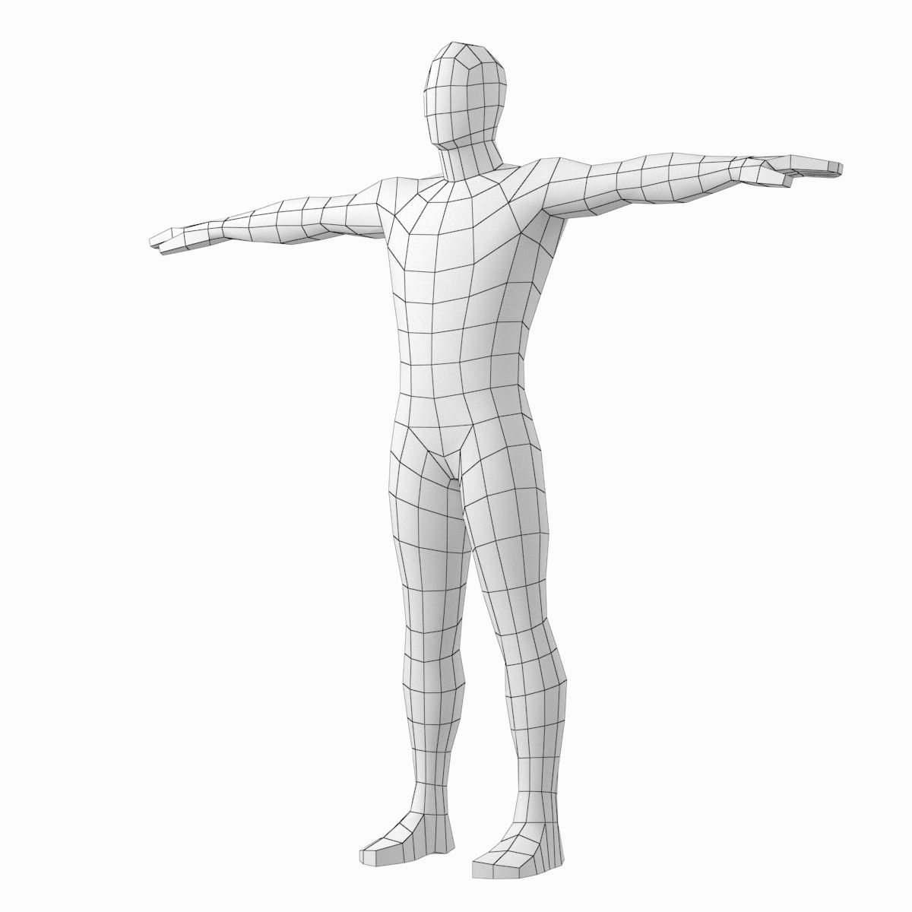

<body>
  
  <canvas width="600" height="600"></canvas>

  <style>
    body {
      margin: 0;
    }
    canvas {
      position: absolute;
      top: 0;
      left: 0;
      background-color: white;
    }
  </style>

  <script src="https://cdn.jsdelivr.net/npm/@tensorflow/tfjs@3.11.0/dist/tf.min.js"></script>
  <script type="module">
    // Извлечение элементов интерфейса
    let context = window.document.querySelector('canvas').getContext('2d');
    let image = window.document.querySelector('img');

    // Использование обученной модели
    const loadAndRunModel = async () => {
      // Загрузка модели
      let model = await tf.loadGraphModel(
        'http://tfhub.dev/google/tfjs-model/movenet/singlepose/lightning/4',
        {fromTFHub: true}
      );
      
      // Подготовка данных 
      let imageTensor = tf.browser.fromPixels(image);
      let resizedTensor = tf.image.resizeBilinear(imageTensor, [192, 192], true).toInt();

      // Использование модели
      let tensorOutput = model.predict(tf.expandDims(resizedTensor));

      // Отображение результата
      tensorOutput.array().then(array => {
        array[0][0].map(elem => {
          let x = elem[1] * image.width;
          let y = elem[0] * image.height;
          context.fillStyle = '#04ff00';
          context.fillRect(x - 5, y - 5, 10, 10);
        })
      });
    }
    await loadAndRunModel();
  </script>
</body>